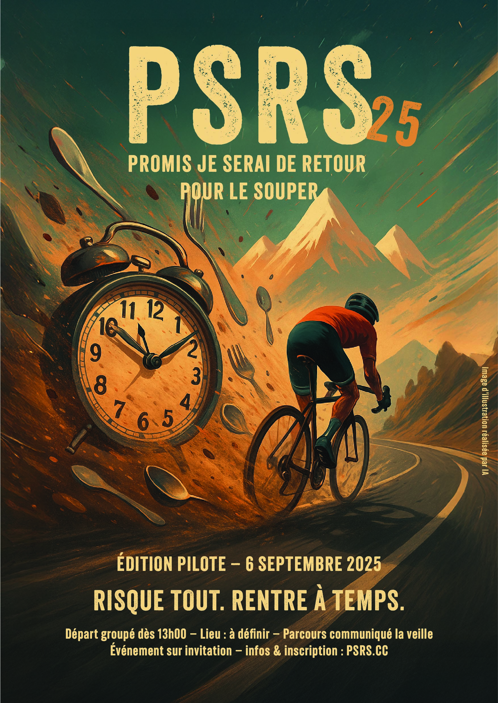

P.S.R.S 25
🥄 Promis je serai de retour pour le souper
📍 Samedi 6 septembre 2025 – départ dès 13h00 - Lieu à définir (canton de Neuchâtel)
L’heure exacte de départ et le lieu te seront communiqué prochainement.
🍝 Le concept
C’est la Vie de cycliste amateur, avec un grand V, qu’on vient titiller avec cette course. [...]
Voici donc, d’une réalité cocasse, nous vous proposons une course aussi loufoque qu’elle fait écho à tous.
Le principe est simple :
Départ groupé sur un parcours dévoilé le matin même.
Tu fais demi-tour quand tu veux... ou tu prends le risque de tenter la boucle complète.
Une seule règle : ÊTRE RENTRÉ POUR LE SOUPER.
Si t’es en retard, t’es disqualifié(e) — même si t’as terminé la boucle.
C’est toi qui gère ton effort, ton timing, ta stratégie. Ou tes excuses. Mais le souper n’attend pas. Jamais.
⏱️ Tu arrives en retard ?
T’es disqualifié (e). Ne soit pas en retard.
MAIS, mais comme ça n’est jamais aussi simple dans la vie, tu peux toujours tenter de te rattraper avec une activité bonus concoctée par l’orga :
Ça peut te faire gagner quelques précieuses minutes... mais compte pas trop dessus.
Ça se mérite, et… le souper n’attend pas.
👑 Classement
Les KOS (Kings of the Souper) et QOS (Queens of the Souper) seront celles et ceux qui rentreront à temps avec le plus de kilomètres dans les jambes.
C’est être borné qui compte. [...]
🍷 L’après course
T’es arrivé à l’heure ? Tant mieux ! On mange tous ensemble et on partage un bon moment autour d’un verre.
T’es arrivé en retard ? Tant pis ! Tu seras disqualifié, mais comme on est sympas, tu te joindras quand même au souper, l’honneur en moins.
🚀 Edition pilote sur invitation
Pour cette première édition, on fait les choses en petit comité. L’idée est de valider la recette. Si ça prend bien, on remettra le couvert l’année prochaine !
❓ F.A.Q
C’est quoi pour un tracé ?
Tu connaîtras le tracé détaillé le matin même de la course. [...]
Il a été fait à la louche le temps de référence ou comment ?
On n’y va pas avec le dos de la cuillère. [...]
On mange quoi pour le souper ?
C’est nous qui faisons à manger, donc tu vas pas faire le pénible hein. [...]
Je peux venir avec du monde ?
Oui, les accompagnant·es sont les bienvenu·es pour le souper. [...]
Ca coûte des sous cette bêtise ?
Oui, une participation de 30 CHF te sera demandée. [...]
C’est pas un peu sexiste comme concept ?
P.S.R.S ne se moque pas d’un genre, mais d’une réalité partagée [...]
C’est moi où vos questions / réponses ne répondent vraiment pas à grand chose?
C’est tout à fait correct. [...]
Okay j’en suis! On s’inscrit comment ?
Te réjouis pas trop vite non plus. [...]
📃 Réglement
On rigole bien, mais quand il s’agit de sécurité et de fair-play, on ne plaisante pas. [...]
Lien vers le règlement🍽️ Inscription
Les frais d’inscription s’élèvent à 50CHF par coureur. [...]
Un mail te sera envoyé avec les coordonnées nécessaires pour le paiement.
Formulaire d'inscription📫 Contact
Pour toute question ou remarque :
✉️ psrs@gmail.com